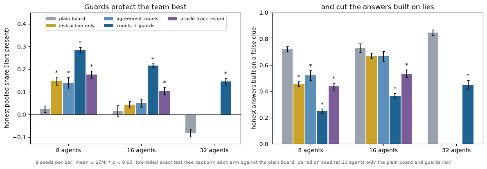
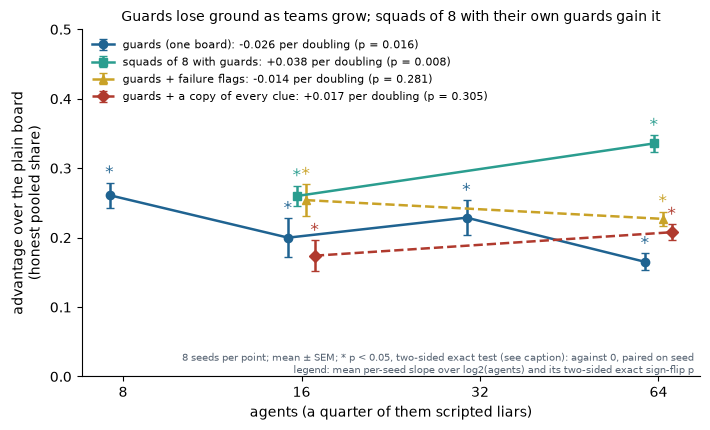
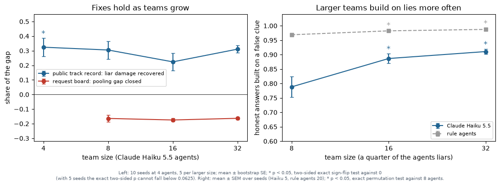
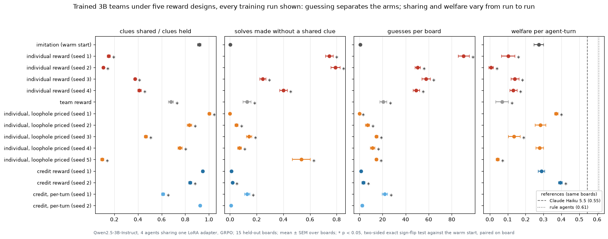
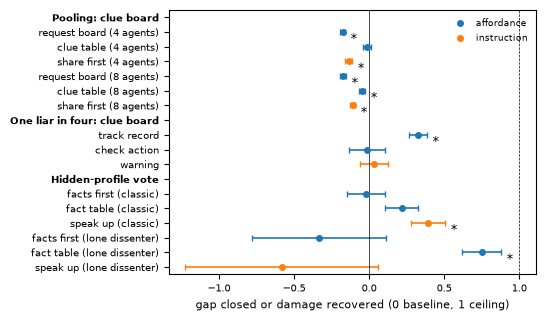

import json
from pathlib import Path
import numpy as np
from explRL.figs_rl import fixes, incentives
from explRL.figs_team import SCALE_ARMS, guards, guardsScale, signP, trend, trustScaleHighlights
Five findings about keeping large teams of language-model agents effective and safe, each with its figure redrawn from the saved per-seed results.
Teams of Claude Haiku 5.5 agents play a clue board. Every subtask’s answer is fixed by two clues held by different agents, so no agent can solve one alone, and sharing a clue costs the sharer a turn. The experiments add one mechanism at a time, each under an analysis plan frozen and committed before its runs. The full write-up is the preprint Guards, Squads and Incentives; a companion preprint, Simulate First?, scores what cheap rule-agent simulations predicted before each run.
This page redraws the figures from data/highlights/highlights.json, a 40 kB extract of the saved runs written by tools/figures.py; the raw results, the API response caches and the trained adapters stay out of the repository. Points and bars are means; error bars are one standard error over seeds (or held-out boards); an asterisk marks p < 0.05 in a two-sided exact test against the stated reference, uncorrected. The preprints give the pre-registered tests, with Holm correction.
H = json.loads(Path('../data/highlights/highlights.json').read_text())1. Verification works as an assigned role
A quarter of the agents are scripted liars, and every clue is dealt to two agents. Guards, as many as there are liars, are told to post, confirm and contest clues and never to solve. With no access to the truth, guards protected the team better than any other defence, including a track record computed from the true answers, and they cut the share of answers built on lies. A board that only displays how many agents agree on each value helped no more than a one-sentence instruction.
guards(H['guards']);
2. Splitting a large team makes verification scale
On one board the guards’ advantage over the plain board shrank as teams grew, because a guard can contest only the clues it holds. Squads of eight, each with its own guards and subtasks, made the advantage grow with team size instead. The legend gives each design’s trend over team size: the mean of each seed’s slope over log2 of the number of agents, per doubling, with its two-sided exact sign-flip p (descriptive). Only the guards’ decline and the squads’ rise are significant. The check below recomputes these from the per-seed data:
guardsScale(H['guardsScale']);
G, names = H['guardsScale'], {a: lab for a, lab, *_ in SCALE_ARMS}
for N, d in sorted(G['colonyGuards'].items(), key=lambda t: int(t[0])):
v = list(d.values())
print(f'guards at {N:>2} agents: ahead in {sum(x > 0 for x in v)} of {len(v)} seeds, mean {np.mean(v):+.3f}, two-sided exact p = {signP(v):.4f}')
for arm, d in G.items():
b, p = trend(d)
print(f"{names[arm]}, {'-'.join(sorted(d, key=int))} agents: {b:+.3f} per doubling, two-sided exact p = {p:.4f}")
rose = sum(G['squads']['64'][s] > G['squads']['16'][s] for s in G['squads']['16'])
print(f"squads: advantage higher at 64 agents than at 16 in {rose} of {len(G['squads']['16'])} seeds")guards at 8 agents: ahead in 8 of 8 seeds, mean +0.261, two-sided exact p = 0.0078
guards at 16 agents: ahead in 8 of 8 seeds, mean +0.200, two-sided exact p = 0.0078
guards at 32 agents: ahead in 8 of 8 seeds, mean +0.229, two-sided exact p = 0.0078
guards at 64 agents: ahead in 8 of 8 seeds, mean +0.165, two-sided exact p = 0.0078
guards (one board), 8-16-32-64 agents: -0.026 per doubling, two-sided exact p = 0.0156
squads of 8 with guards, 16-64 agents: +0.038 per doubling, two-sided exact p = 0.0078
guards + failure flags, 16-64 agents: -0.014 per doubling, two-sided exact p = 0.2812
guards + a copy of every clue, 16-64 agents: +0.017 per doubling, two-sided exact p = 0.3047
squads: advantage higher at 64 agents than at 16 in 8 of 8 seeds3. Larger teams are more gullible
With one holder per clue and a quarter of the agents liars, the share of honest answers built on a false clue rose with team size for Claude agents but not for rule agents (right). Replaying every turn from the response cache showed why: lies were no more visible in larger teams, but once a liar had posted a clue, agents treated it as settled. The fixes that worked at four agents kept working as teams grew (left).
trustScale(H['trust']);
4. The reward decides whether trained copies cooperate
Copies of Qwen2.5-3B-Instruct share one LoRA adapter and are trained with group-relative policy gradients from a warm start that imitates a rule agent. Each row is one training run, evaluated on 15 held-out boards against the warm start. Under individual reward the copies stopped sharing and guessed. Pricing wrong answers during training stopped the guessing in every run, but its effect on sharing varied from run to run. Offered the guard role without an assignment, no Claude agent took it, and team-reward training did not make roles emerge.
incentives(H['incentives']);
5. Move information; do not add work
Each fix against its baseline at four agents (eight where marked): the share of the gap to the ceiling closed, or of a liar’s damage recovered. Fixes that move or certify information at no cost in turns helped; those that add work to every agent’s turn did not.
fixes(H['fixes'], paper=True);
Reproduce
python tools/figures.py . rebuilds data/highlights/highlights.json and every figure from results/multiagent/, which is kept out of git. The runs and their frozen plans are in the phase notebooks:
- guards at 8 and 16 agents: demo_colony; at 32 and 64 agents: colony32 and colony64
- squads and the other design changes: colony4 and colony4_report
- replays of the guard boards and of the gullible teams: colony_trace and demo_liar
- fixes at four agents and as teams grow: demo_fix and demo_trust
- training: demo_rl16, demo_rl17 and demo_rl18
Every API reply is cached, so a rerun with the caches reproduces each row byte for byte at no cost.